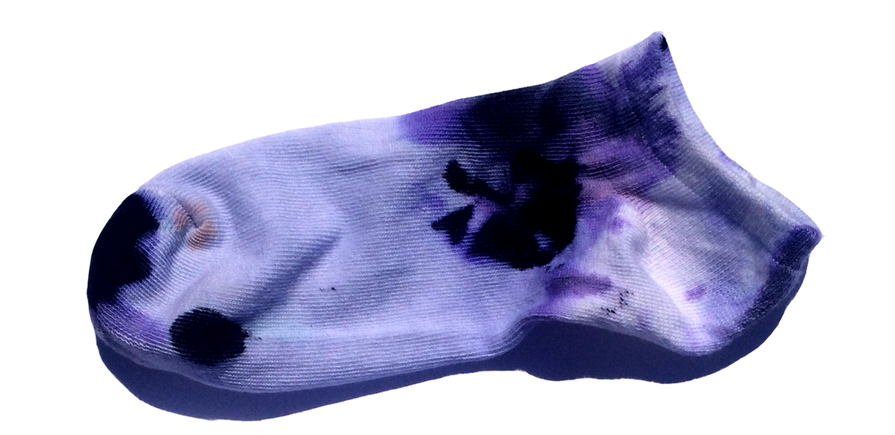

The Value of Randomness in Art and Design 3/3
by carl lostritto
With multiples roles of randomness in art and design explored, another deeper question can be raised: can the generation of randomness itself constitute a work of art? This was another question posed by the design computation course mentioned above. Making a random number generator “from scratch” is not just an artistic endeavor, however. Some of us prefer to know how to do the things we ask the computer do for us on a regular basis.
For this assignment, a premium is placed on minimalism. Students are asked to consider what one can do in order to achieve random results. Like the “random()” function in programming languages, the results can be random but predictable if one knows the process, which fully determines the outcome. I teach the students an algorithm for creating and using a linear-feedback shift register to generate numbers. Though common in digital computing, this process can be executed with pencil and paper or physically with a tray and some marbles. One student, Rami Hammour, created a single–and very large–image of every step of this process at three scales of register length. The image is not random, but rather a representation of a simple, repeating, patterned, systematic cycle for producing randomness. Linyi Dai used the value of each register at each of 50 steps to generate the rungs of a sphere.
Inspired by the most reliable source of randomness universally available on the computer, random.org, which samples natural phenomena and digitally records and processes it to achieve “true” randomness, many students are inclined to operate physically, and experiment with material media to generate random values. Students find themselves facing the same quandary raised by Bishop Derry. Something like a splatter of paint may be unpredictable at first, but as the mechanism for splattering paint becomes more controlled–and less contingent, it becomes clear that randomness can be rarely achieved by physical means–at least on the scale of paint. But it can certainly be done. Lavarand is one example in which the behavior of Lava Lites helps to generate random numbers. Another related example entails creating a manually-operated random machine with geometry. In a course I once taught, Matthew Solomon created a random number generator with a triangle as a seed. A line bounces within the triangle based on a set of rules. Numbers are generated based on where the line intersects the edge of the triangle. Aaron Tobey wrote a script to execute a similar though slightly more complex series of geometric operations and logical rules to build a random sequence.
This work doesn’t prove anything about randomness, but suggests that computing may serve as a medium for art rather than a tool to make art. Because randomness so inhuman, to wield might mean to undermine our humanity, but it also might function as a foil in our efforts to better understand the nature of our own creative instincts.
